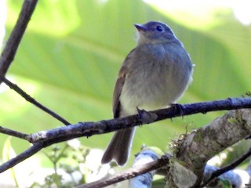

Myiophobus inornatus
The Unadorned Flycatcher is a dull, medium sized flycatcher that inhabits montane forest. It is greenish grey, with dull reddish wings that have weak red wing bands. They often perch upright in the midstory of montane, where pairs and individuals may join mixed-specie flocks.